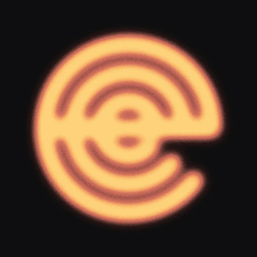
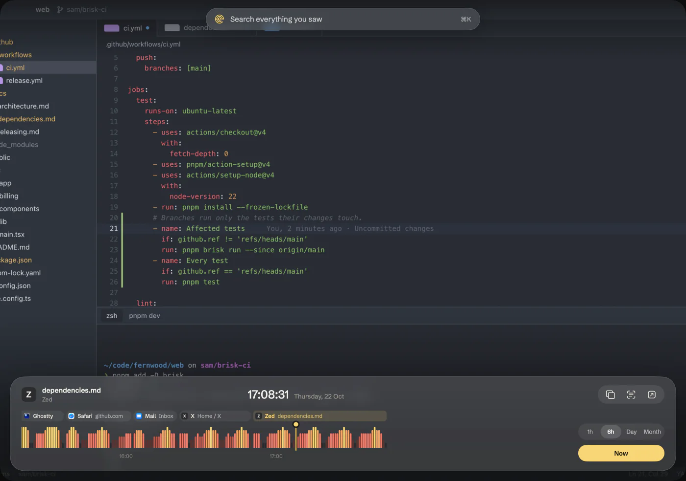
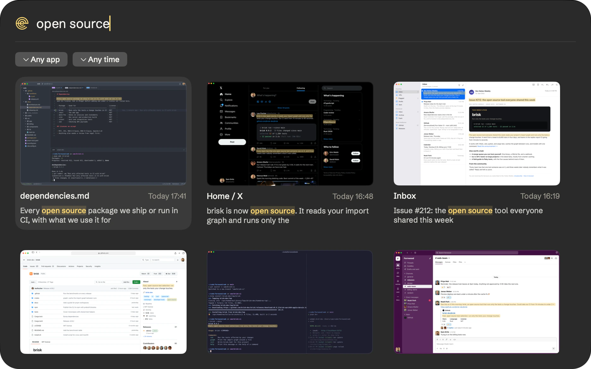
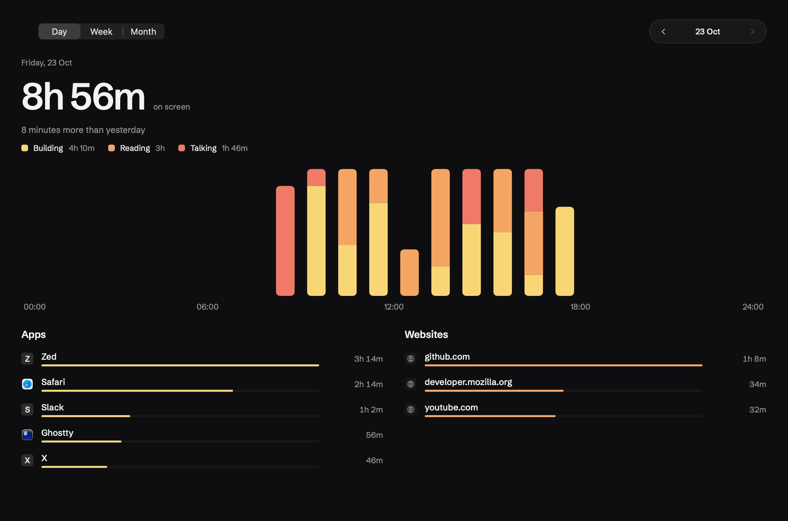
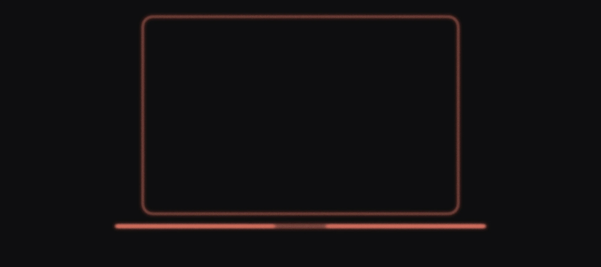

Every moment leaves an echo.
A private memory of everything on your Mac’s screen.
Free for personal use. macOS 26 on Apple silicon.
Go back to any moment
Scroll back through your day and the screen comes back with it. The taller the bar, the more changed.

Find anything you saw
Type a word you remember. Erst read it in every app, even the chats and pages you never saved.


Where your time went
By app, by website, and by kind of work. A quiet hour of reading still counts.
Ask your agent what you saw
Connect Claude Code, Codex, or Cursor in Settings. Your agent asks Erst through MCP and gets text, never images. The same questions work in Terminal.
Claude Code
~/code/erst
> Where did my day go?
erst - activity_summary (MCP)(range: "today")
⎿ 9h 4m on screen, 3 kinds of work
You spent 9h 4m on screen, almost half of it reading:
- - Reading: 4h 20m
- - Building: 2h 26m
- - Talking: 2h 18m
? for shortcuts
~ % erst search "pull request" --limit 3
2026-10-22 17:38:04 Zed invoice.ts
remote: Create a pull request for 'sam/zero-decimal-currencies'
2026-10-22 16:47:31 X Home / X
Small pull requests get reviewed. Big pull requests get approved.
2026-10-22 16:19:12 Mail Inbox
@noahpark requested your review on this pull request.~ %
Your history stays on your Mac
Everything Erst keeps lives in one folder on this Mac, and you decide what it keeps.

Nothing leaves this Mac
No account and no server. Its only request is a daily check for updates.
Passwords stay out
Password fields are never recorded, and neither are the apps you list.
Agents read text only
They never get images, and you decide how far back they can read.
Erase the last hour
Its screens, text, and video go together, with secure delete.